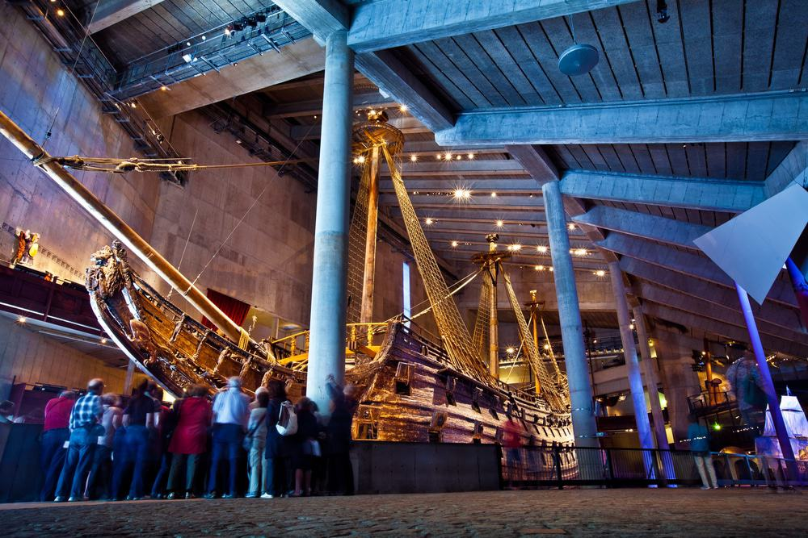

Vasa Museum

The Vasa was a 64-gun warship that went down on its first voyage in 1628. It remained in the deep until 1961 when it was lifted to the surface and slowly and painstakingly restored.
- Experience: Visiting the Vasa Museum is a learning experience for everyone!
- Cost: Free for kids, 170.00kr for adults ($19.72)
- More Information: Here